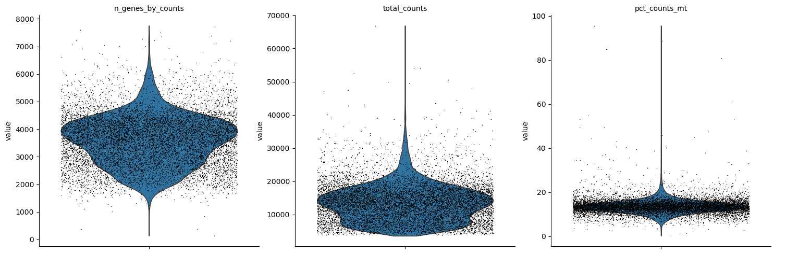
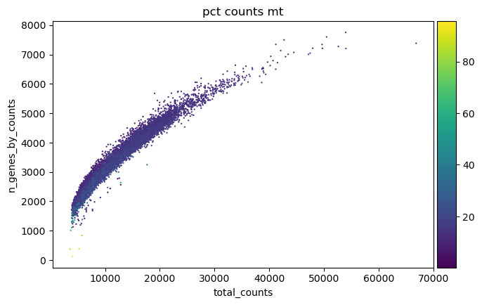
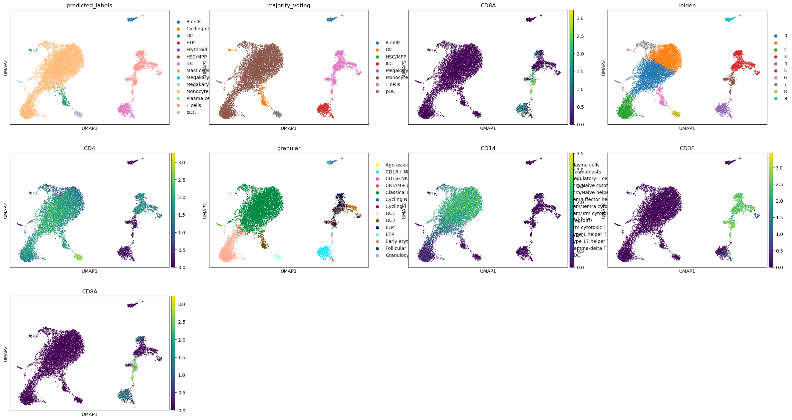
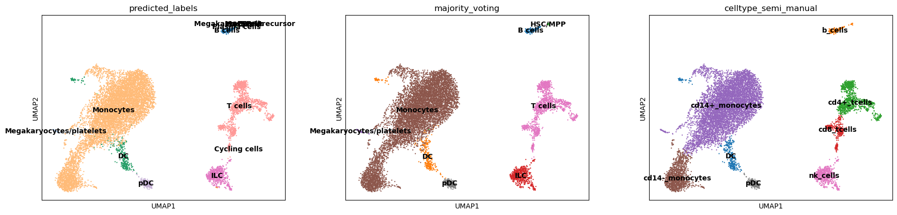

[1]:
import anndata as ad
import celltypist
from celltypist import models
import scanpy as sc
import numpy as np
/data_nfs/og86asub/netmap/netmap-evaluation/netmap/.pixi/envs/default/lib/python3.12/site-packages/celltypist/classifier.py:11: FutureWarning: `__version__` is deprecated, use `importlib.metadata.version('scanpy')` instead
from scanpy import __version__ as scv
[2]:
np.random.seed(12)
[3]:
## Load adata (prefiltered by cellrange/rhapsody)
adata = sc.read_10x_mtx('netmap/data/blood/rhapsody/rhapsody_out/')
[4]:
[4]:
| gene_ids | feature_types | |
|---|---|---|
| A1BG | ENSG00000121410.13 | Gene Expression |
| A1BG-AS1 | ENSG00000268895.6 | Gene Expression |
| A1CF | ENSG00000148584.17 | Gene Expression |
| A2M | ENSG00000175899.16 | Gene Expression |
| A2M-AS1 | ENSG00000245105.5 | Gene Expression |
| ... | ... | ... |
| ZYG11B | ENSG00000162378.14 | Gene Expression |
| ZYX | ENSG00000159840.17 | Gene Expression |
| ZZEF1 | ENSG00000074755.16 | Gene Expression |
| ZZZ3 | ENSG00000036549.14 | Gene Expression |
| hsa-mir-423 | ENSG00000266919.3 | Gene Expression |
46998 rows × 2 columns
[5]:
#adata.var = adata.var.reset_index()
#adata.var = adata.var.set_index("gene_symbol")
#data.var.index = adata.var.index.astype(str)
#adata.var = adata.var.set_index('index')
adata.var_names_make_unique()
[6]:
adata.var_names
[6]:
Index(['A1BG', 'A1BG-AS1', 'A1CF', 'A2M', 'A2M-AS1', 'A2ML1', 'A2ML1-AS1',
'A2MP1--chr12:9228533(-)', 'A3GALT2', 'A4GALT',
...
'ZWINT', 'ZXDA', 'ZXDB', 'ZXDC', 'ZYG11A', 'ZYG11B', 'ZYX', 'ZZEF1',
'ZZZ3', 'hsa-mir-423'],
dtype='object', length=46998)
[7]:
# mitochondrial genes, "MT-" for human, "Mt-" for mouse
adata.var["mt"] = adata.var_names.str.startswith("MT-")
# ribosomal genes
adata.var["ribo"] = adata.var_names.str.startswith(("RPS", "RPL"))
# hemoglobin genes
adata.var["hb"] = adata.var_names.str.contains("^HB[^(P)]")
sc.pp.calculate_qc_metrics(adata, qc_vars=["mt", "ribo", "hb"], inplace=True, log1p=True)
[8]:
sc.pl.violin(
adata,
["n_genes_by_counts", "total_counts", "pct_counts_mt"],
jitter=0.4,
multi_panel=True,
)
... storing 'feature_types' as categorical

[9]:
sc.pl.scatter(adata, "total_counts", "n_genes_by_counts", color="pct_counts_mt")

[10]:
sc.pp.filter_cells(adata, min_genes=500)
sc.pp.filter_genes(adata, min_cells=50)
adata = adata[adata.obs.pct_counts_mt<20]
[11]:
sc.pp.scrublet(adata)
[12]:
adata = adata[adata.obs.predicted_doublet == False]
[13]:
# Saving count data
adata.layers["counts"] = adata.X.copy()
[14]:
# Normalizing to median total counts
sc.pp.normalize_total(adata, target_sum = 10000)
adata.layers['count_norm'] = adata.X.copy()
# Logarithmize the data
sc.pp.log1p(adata)
[15]:
models.download_models(model = 'Immune_All_Low.pkl', force_update = True)
model = models.Model.load(model = 'Immune_All_High.pkl')
predictions = celltypist.annotate(adata, model = 'Immune_All_High.pkl', majority_voting = True)
📜 Retrieving model list from server https://celltypist.cog.sanger.ac.uk/models/models.json
📚 Total models in list: 61
📂 Storing models in /data/og86asub/.celltypist/data/models
💾 Total models to download: 1
💾 Downloading model [1/1]: Immune_All_Low.pkl
🔬 Input data has 10925 cells and 21772 genes
🔗 Matching reference genes in the model
🧬 4861 features used for prediction
⚖️ Scaling input data
🖋️ Predicting labels
✅ Prediction done!
👀 Can not detect a neighborhood graph, will construct one before the over-clustering
⛓️ Over-clustering input data with resolution set to 10
🗳️ Majority voting the predictions
✅ Majority voting done!
[16]:
adata = predictions.to_adata()
adata.obs.majority_voting.value_counts()
[16]:
majority_voting
Monocytes 8252
T cells 1312
ILC 611
DC 341
pDC 205
B cells 146
Megakaryocytes/platelets 37
HSC/MPP 21
Name: count, dtype: int64
[17]:
model = models.Model.load(model = 'Immune_All_Low.pkl')
predictions = celltypist.annotate(adata, model = 'Immune_All_Low.pkl', majority_voting = True)
🔬 Input data has 10925 cells and 21772 genes
🔗 Matching reference genes in the model
🧬 4861 features used for prediction
⚖️ Scaling input data
🖋️ Predicting labels
✅ Prediction done!
👀 Detected a neighborhood graph in the input object, will run over-clustering on the basis of it
⛓️ Over-clustering input data with resolution set to 10
🗳️ Majority voting the predictions
✅ Majority voting done!
[18]:
adata.obs['granular']= predictions.predicted_labels['predicted_labels']
[19]:
sc.pp.highly_variable_genes(adata, n_top_genes=2500)
[20]:
sc.pp.pca(adata)
sc.pp.neighbors(adata)
sc.tl.leiden(adata)
[21]:
sc.tl.umap(adata)
[22]:
sc.tl.leiden(adata, resolution=0.35)
[23]:
sc.pl.umap(adata, color = [ 'predicted_labels', 'majority_voting', 'CD8A','leiden', 'CD4', 'granular', 'CD14', 'CD3E', 'CD8A'])

[35]:
celltype_mapping_2 = {
'0': 'cd14+_monocytes',
'1': 'cd14+_monocytes',
'2': 'cd14-_monocytes',
'3': 'cd4+_tcells',
'4': 'nk_cells',
'5': 'cd8_tcells',
'6': 'DC',
'7': 'cd14+_monocytes',
'8': 'pDC',
'9': 'b_cells'}
[37]:
adata.obs['celltype_semi_manual'] = [celltype_mapping_2[c] for c in adata.obs['leiden']]
[38]:
adata = adata[:,adata.var.pct_dropout_by_counts<95].copy()
[39]:
sc.pl.umap(adata, color = [ 'predicted_labels', 'majority_voting', 'celltype_semi_manual'], legend_loc = 'on data')
... storing 'celltype_semi_manual' as categorical

[40]:
adata.X = np.nan_to_num(adata.X)
adata.X[adata.X == np.inf] = 0
adata.X[adata.X == -np.inf] = 0
[41]:
adata = adata[:, adata.var.highly_variable].copy()
[42]:
adata = adata[adata.obs.celltype_semi_manual != 'megakaryocytes'].copy()
[43]:
import pandas as pd
## Use file in github resource folder
pangalao = pd.read_csv('panglaodb_human.csv')
high_ui = pangalao[pangalao['UI']>0.1]['Official gene symbol'].values
adata = adata[:, ~adata.var.index.isin(high_ui)].copy()
[44]:
# Save data set for furter processing
adata.write_h5ad('netmap/data/blood/reprocessed/bd-rhap-rep1.h5ad')
[45]:
adata.obs.celltype_semi_manual.value_counts()
[45]:
celltype_semi_manual
cd14+_monocytes 6971
cd14-_monocytes 1312
cd4+_tcells 964
nk_cells 613
cd8_tcells 347
DC 342
pDC 211
b_cells 165
Name: count, dtype: int64
[46]:
[46]:
AnnData object with n_obs × n_vars = 10925 × 1176
obs: 'n_genes_by_counts', 'log1p_n_genes_by_counts', 'total_counts', 'log1p_total_counts', 'pct_counts_in_top_50_genes', 'pct_counts_in_top_100_genes', 'pct_counts_in_top_200_genes', 'pct_counts_in_top_500_genes', 'total_counts_mt', 'log1p_total_counts_mt', 'pct_counts_mt', 'total_counts_ribo', 'log1p_total_counts_ribo', 'pct_counts_ribo', 'total_counts_hb', 'log1p_total_counts_hb', 'pct_counts_hb', 'n_genes', 'doublet_score', 'predicted_doublet', 'predicted_labels', 'majority_voting', 'conf_score', 'granular', 'leiden', 'celltype_semi_manual'
var: 'gene_ids', 'feature_types', 'mt', 'ribo', 'hb', 'n_cells_by_counts', 'mean_counts', 'log1p_mean_counts', 'pct_dropout_by_counts', 'total_counts', 'log1p_total_counts', 'n_cells', 'highly_variable', 'means', 'dispersions', 'dispersions_norm'
uns: 'scrublet', 'log1p', 'neighbors', 'over_clustering', 'hvg', 'pca', 'leiden', 'umap', 'predicted_labels_colors', 'majority_voting_colors', 'leiden_colors', 'granular_colors', 'celltype_semi_manual_colors'
obsm: 'X_pca', 'X_umap'
varm: 'PCs'
layers: 'counts', 'count_norm'
obsp: 'connectivities', 'distances'